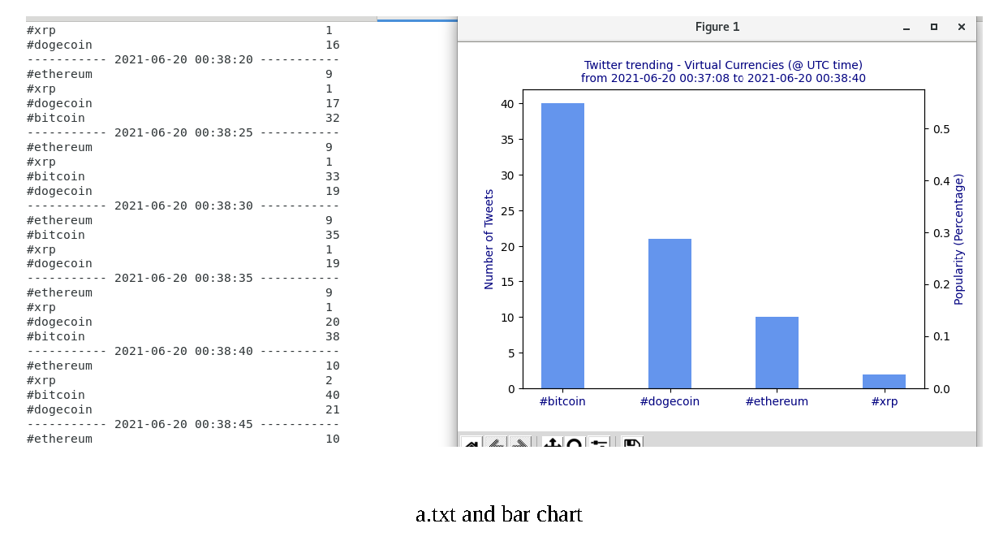
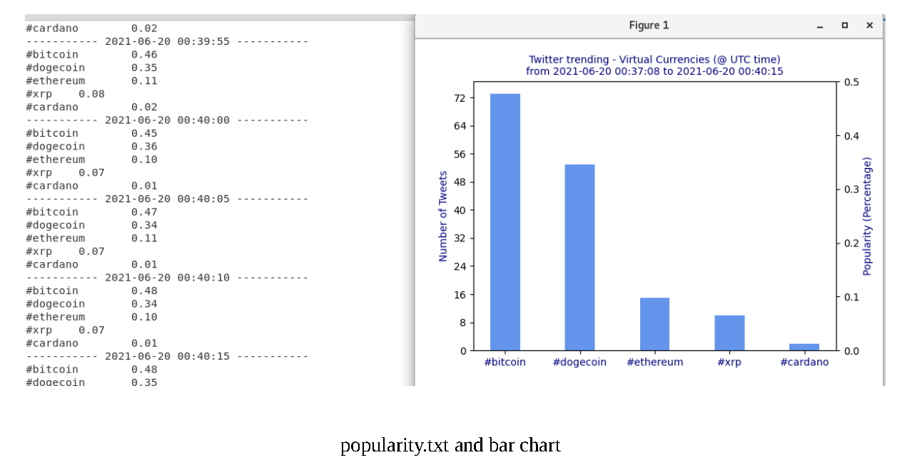
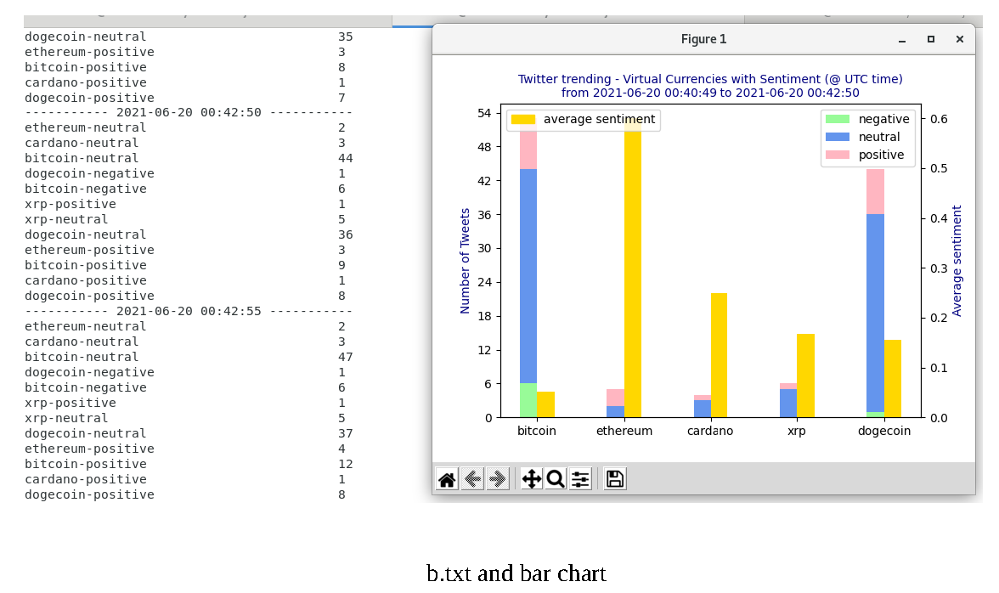
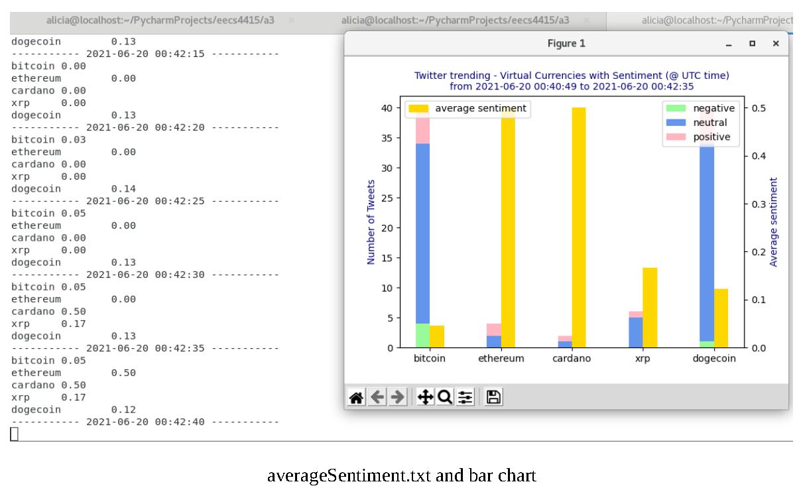

Twitter Stream Analysis of Cryptocurrency Trends
This project involved building a real-time data pipeline using Apache Spark Streaming, Tweepy, and Python NLP tools to analyze public sentiment and hashtag trends for five major cryptocurrencies. Data was collected live from Twitter and processed to visualize both hashtag popularity and sentiment trends.
Results Summary
Part A – Hashtag Popularity Tracking:
Tweets containing #bitcoin, #ethereum, #dogecoin, #xrp, and #cardano were tracked and aggregated in real time. Mentions were logged in a.txt and processed into popularity.txt for visualization.
Sample Plots:


Part B – Real-Time Sentiment Analysis:
Tweets were analyzed using VADER sentiment analysis to classify them by topic and polarity. Sentiment counts were stored in b.txt and average sentiment per topic over time was computed in averageSentiment.txt.
Sample Plots:

